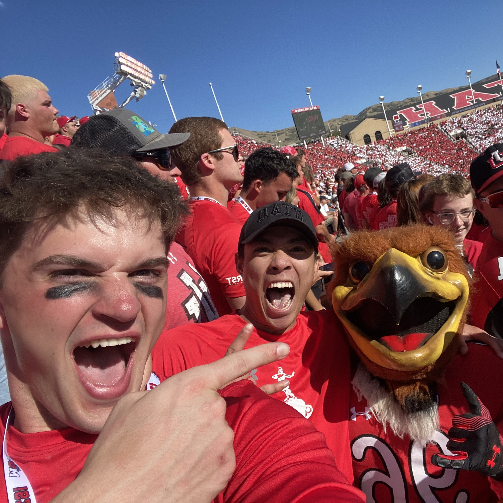
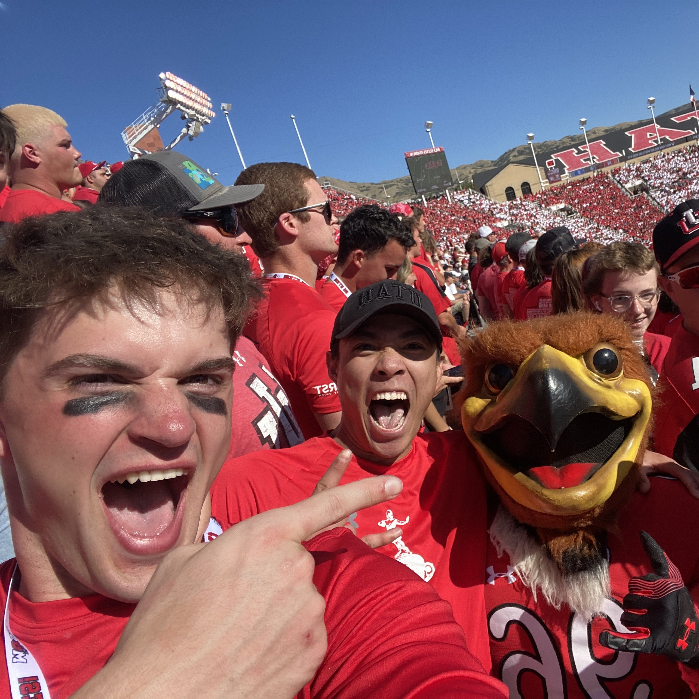

Welcome to My Portfolio!
This portfolio highlights projects completed as part of my undergraduate studies in Computer Engineering at the University of Utah.
Browse the featured projects below to see examples of my technical work and engineering experience.


 
